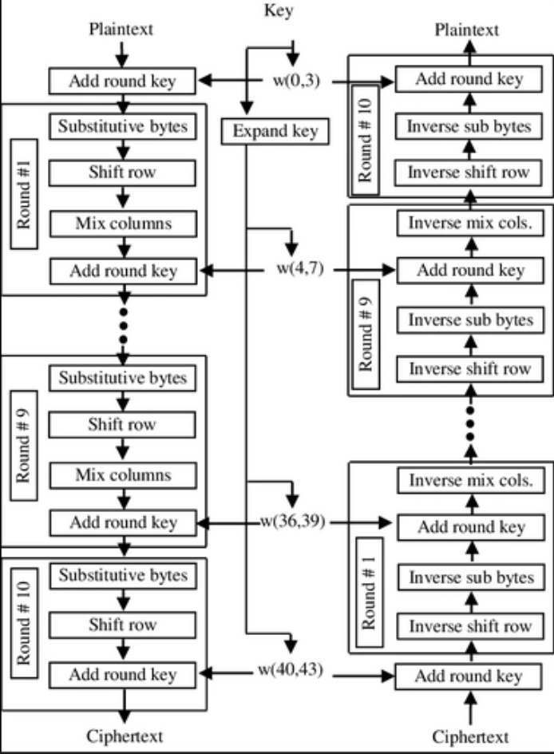

The Advanced Encryption Standard (AES) is a symmetric block cipher that operates on 128‑bit (16‑byte) blocks under a 128‑, 192‑, or 256‑bit key. This page focuses on AES‑128 (10 rounds), the same algorithm implemented in the interactive tool. We’ll explore why it uses matrix operations, the role of finite fields, the key schedule, and the linear algebra that makes decryption possible.

AES treats a 16‑byte input as a 4×4 matrix of bytes, called the state.
Each byte is an element of the finite field GF(28).
The encryption process applies four transformations in each round:
GF(28) (omitted in the final round).
Before the first round, an initial AddRoundKey is performed.
Decryption reverses these steps with the inverse transformations.
The encryption of a 16‑byte plaintext block proceeds as follows:
Omitting MixColumns in the last round makes the cipher a true involution when the inverse operations are applied in reverse order. The full encryption routine in pseudo‑code looks exactly like the C++ implementation in the tool:
matrix = plaintext
matrix = AddRoundKey(matrix, roundKey[0])
for r = 1 to 9:
matrix = SubBytes(matrix)
matrix = ShiftRows(matrix)
matrix = MixColumns(matrix)
matrix = AddRoundKey(matrix, roundKey[r])
matrix = SubBytes(matrix)
matrix = ShiftRows(matrix)
matrix = AddRoundKey(matrix, roundKey[10])
return matrix // ciphertextDecryption must undo each transformation in the reverse order, using the inverse of every operation:
Pseudo‑code for decryption:
matrix = ciphertext
matrix = AddRoundKey(matrix, roundKey[10])
for r = 9 downto 1:
matrix = InvShiftRows(matrix)
matrix = InvSubBytes(matrix)
matrix = AddRoundKey(matrix, roundKey[r])
matrix = InvMixColumns(matrix)
matrix = InvShiftRows(matrix)
matrix = InvSubBytes(matrix)
matrix = AddRoundKey(matrix, roundKey[0])
return matrix // original plaintextBecause every operation is invertible, applying the inverse operations in the correct order recovers the original state exactly.
AES performs all byte‑oriented operations in the finite field GF(28) = GF(2)[x] / (x8 + x4 + x3 + x + 1).
This means every byte represents a polynomial of degree ≤7 with coefficients in {0,1}.
Addition is bitwise XOR, and multiplication is polynomial multiplication followed by reduction modulo the irreducible polynomial m(x) = x8 + x4 + x3 + x + 1.
Why a finite field? Ordinary arithmetic would produce values outside 0–255, breaking the byte structure. The field ensures every non‑zero byte has a multiplicative inverse, which is essential for decryption. The S‑box is built from the multiplicative inverse in GF(28) followed by an affine transformation, giving strong non‑linearity.
Example multiplication in code (the gfmul function):
We repeatedly shift and conditionally XOR with 0x1b (the reduction polynomial without the x8 term).
This implements polynomial multiplication modulo m(x).
function gfmul(a, b):
result = 0
while b > 0:
if b & 1: result ^= a
b >>= 1
a <<= 1
if a & 0x100: a ^= 0x1b // reduce modulo m(x)
a &= 0xff
return resultMixColumns treats each column of the state as a 4‑dimensional vector over GF(28) and multiplies it by a fixed 4×4 matrix (the MDS matrix):
[ 02 03 01 01 ]
M = [ 01 02 03 01 ]
[ 01 01 02 03 ]
[ 03 01 01 02 ]This operation provides diffusion: a change in one byte of the column spreads to all four output bytes. The matrix was carefully chosen to be Maximum Distance Separable (MDS), meaning it achieves the maximum possible diffusion for a linear code. In practical terms, two different input columns can differ in at most 4 bytes, and after MixColumns they will differ in at least 5 bytes (when counting all columns together), making cryptanalysis harder.
Why is it linear? Matrix multiplication over a field is a linear transformation. This linearity is undone by the non‑linear SubBytes step, and together they form a substitution–permutation network that resists linear and differential attacks.
SubBytes replaces each byte with a value from the 16×16 S‑box. The S‑box is designed to be highly non‑linear (no linear relationship between input and output bits) and to have no fixed points. It is the only non‑linear component in AES, and it breaks the linearity of MixColumns, making the overall cipher resistant to linear cryptanalysis.
Is the S‑box linear? No. Many people think S‑box designs are linear because the construction uses an affine (linear) map, but the core is the multiplicative inverse in GF(28), which is highly non‑linear. The affine transformation is added afterwards to complicate algebraic attacks. Crucially, the S‑box is a bijection (one‑to‑one and onto), so every possible byte appears exactly once. That’s why the inverse S‑box exists and decryption works. A non‑invertible S‑box would break decryption.
ShiftRows is a simple cyclic shift:
This permutation moves bytes across columns, ensuring that the four bytes of each column are later mixed with bytes from other columns in the next MixColumns.
The 128‑bit cipher key must be expanded into 11 round keys of 128 bits each – one for the initial AddRoundKey and one for each of the 10 rounds.
The key schedule uses a word‑oriented approach: it treats the key as 4 words (each word = 4 bytes) and generates a total of 44 words W[0]…W[43].
Each round key consists of 4 consecutive words.
W[0]…W[3] are directly the cipher key bytes, taken in column‑major order (the same order as the state matrix).i = 4 to 43:
temp = W[i-1].i is a multiple of 4 (i.e., every 4th word):
[a0,a1,a2,a3] → [a1,a2,a3,a0].Rcon[i/4].W[i] = W[i-4] ⊕ temp.The key schedule reuses the same S‑box as SubBytes for two reasons:
The round constants Rcon[k] are simply powers of 2 in the field GF(28):
Rcon[1] = 0x01, Rcon[2] = 0x02, Rcon[3] = 0x04, Rcon[4] = 0x08, Rcon[5] = 0x10,
Rcon[6] = 0x20, Rcon[7] = 0x40, Rcon[8] = 0x80, Rcon[9] = 0x1B, Rcon[10] = 0x36They prevent the key schedule from being periodic. Without them, the same operations would be applied every 4 words, leading to symmetry that could be exploited in related‑key attacks. By XORing a different constant each round, every 4‑word block is distinct.
RotWord is a simple byte rotation. It ensures that the four bytes of a word are mixed differently when they become the input to the S‑box. Combined with SubWord, it makes the key schedule act on each byte position in a unique way, preventing slide attacks where rounds would look identical.
In the interactive tool, the function keyexpand() implements exactly this algorithm, storing all 11 round keys in the keymap array. The same expanded keys are used for both encryption and decryption.
Decryption must invert each transformation (as described in the decryption walkthrough):
[ 0E 0B 0D 09 ]
M⁻¹ = [ 09 0E 0B 0D ]
[ 0D 09 0E 0B ]
[ 0B 0D 09 0E ]The decryption order (already shown in section 3) is: AddRoundKey (round 10), then for rounds 9 down to 1: InvShiftRows → InvSubBytes → AddRoundKey → InvMixColumns, and finally InvShiftRows → InvSubBytes → AddRoundKey (round 0).
The MixColumns matrix M is a 4×4 matrix over the field GF(28).
Its determinant is non‑zero (in fact det(M) = 0x01), so it is invertible.
By definition of matrix inverse, M⁻¹ * M = I, where I is the 4×4 identity matrix.
When we apply M⁻¹ after MixColumns during decryption, we recover the original column vector because:
M⁻¹ · (M · col) = (M⁻¹ · M) · col = I · col = col
This relies on the matrix being defined over a field where every non‑zero element has a multiplicative inverse.
The inverse matrix entries (like 0x0E, 0x0B, etc.) are precisely the values that satisfy the identity when multiplied with the MixColumns matrix.
AES mixes linear and non‑linear layers:
The choice of the MixColumns matrix is guided by coding theory: it is an MDS (Maximum Distance Separable) matrix derived from a Cauchy matrix construction. This guarantees that any non‑zero column vector produces an output where at least 5 of the 16 bytes (across all four columns) are non‑zero after two rounds, a property called full diffusion. The same matrix works for its own inverse because the MDS property is preserved under inversion.
If you look at the vector space (GF(28))4, the MixColumns matrix is a linear operator.
Linear algebra tells us that an operator is invertible if and only if its determinant is non‑zero.
The designers chose M such that det(M) = 01, ensuring a simple inverse.
AES‑128 is a substitution‑permutation network (SPN) with 10 rounds, each composed of:
The combination of these simple, mathematically sound operations yields a cipher that has withstood decades of cryptanalysis. Understanding the underlying fields and linear algebra helps appreciate why each step is necessary and how the inverse works.
This explanation is tailored to the AES‑128 implementation you see in the interactive tool. All operations are byte‑wise and match the code exactly. For further reading, refer to the official FIPS‑197 specification or “The Design of Rijndael” by Daemen and Rijmen.
← Back to Encryption Tool